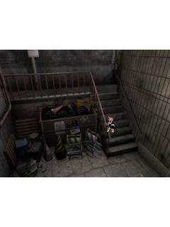

By Biohazard, we had quite a pile to draw from. Its notes name Monster Hunter’s model parser and renderer, Snowboarding’s graphics knowledge, DeadShot’s contact handling, Genesis’s presentation, and services from Wolfenstein, DOOM and Contra.BE02
Parts that fit—and units that did not.
The model format could be reused, but this game called a different floating-point graphics API. Translation and clipping conversion needed their own scale, separate from the basis matrix. Applying another factor to the basis would make the adapted renderer draw the wrong-sized models.BE03
The sound bank also lived somewhere specific: 33 MFi resources inside the second scratchpad slot. Its play(int) argument meant a millisecond seek position. A useful audio decoder still needed to be connected to the right bytes and the right call meaning.BE04BE05
A shorter rectangle changed the camera.
The physical 0.1.0 report reached room 21 with resources loading and audio starting, but the camera conversion used the 240×180 3D clip instead of the full 240×320 canvas. The original game scaled its camera angle from canvas height; clipping should have limited drawing, not changed the projection.BE11BE12
The recorded old room-21 angle matched that wrong conversion. Correcting it put Jill in the staircase corridor in the controlled original-room draw, rather than toward the junk and railing. We kept the original room data and compared fixed positions, so the change we were seeing came from the camera repair.BE12BE13

A controlled original-room host draw retained from 0.1.2, using a specified test position. Jill appears in the staircase corridor. This is not a replay or screenshot of the phone session.
Open the image for the full original view.
BE90One whole press needs one binding.
Later contextual controls uncovered another mismatch. An action held as numeric 5 could become SELECT when an unrelated input arrived after the game entered a menu. The held Walk/Run shortcut could similarly change key. The 0.1.4 repair kept a native binding for the entire press; the next fresh press could use the new context.BE15
Even the font test had missed what it claimed to check. It changed font scale after constructing the interface. Applying the larger scale before construction exposed the clipped DoJa label, and gave the layout repair a failing baseline it could actually beat.BE16BE20
We kept the shared shell and the useful earlier rendering work. Biohazard made us fill in the gaps around its camera, held bindings and initial font configuration. Those were more pieces the next bridge could benefit from.BE17BE19
About these records
The source explicitly identifies earlier contributions; those credits are not inferred from similar screens. The first projection error is tied to the inspected phone report, while the corrected room image uses controlled host fixture positions. Later input and font repairs have their stated original-method/framework checks. Original game byte preservation and revised-host scope are retained without inventing a new handset replay.
The receipts
Selected report lines, investigation notes and recorded feedback. Each receipt keeps its original source and scope.
BE02 / A bridge assembled from earlier discoveriesCheckpoint investigation notes
Source: Biohazard_Episodes_Bridge_v0.1.0_PRIVATE_CHECKPOINT.zip / Biohazard_Episodes_Bridge_v0.1.0_PRIVATE/README.md · selected lines 40–42
## Prior-work references The recovered Monster Hunter i v0.1.2 checkpoint supplies the DoJa model parser, software renderer and MFi translation foundation. Its bundled Snowboarding work informed the float utility adapter. DMC DeadShot v0.1.2 informed the per-contact input handling. Resident Evil Genesis v0.6.1 informed the dark teal presentation, controls and report tools. Wolfenstein RPG v0.1.0 and Doom RPG v0.1.1 informed system-bar/cutout handling; Contra 4 v0.1.1 informed completed-frame presentation, idle behavior and logging restraint. This title has its own Android package and signing identity.
BE03 / Reuse the model parser without multiplying the camera twiceCheckpoint investigation notes
Source: Biohazard_Episodes_Bridge_v0.1.0_PRIVATE_CHECKPOINT.zip / Biohazard_Episodes_Bridge_v0.1.0_PRIVATE/HANDOFF.md · selected lines 3–7
Entry: `BioMain.start()` creates `b`, installs the DoJa canvas and starts its own game thread. First playable state in the observed route is `b.ah == 8`. The native logical surface is 240x320; the original game centres its 240x240 content at y=40. The bridge aspect-fits this surface and publishes only after graphics unlock. The game uses `com.nttdocomo.ui.graphics3d` and float `util3d` APIs, whereas the previous Monster Hunter runtime uses `opt.ui.j3d`. The adapter preserves the game-supplied float transforms and uses the previous MBAC/MTRA parser. Translation and near/far values are scaled by 64 while the matrix basis uses 4096 fixed-point. Scaling the basis by an extra 64 produces oversized broken models. Keep these contracts separate. Transform indices are row-major (translation 3, 7, 11). Multiply is postmultiply and supports self-aliasing. Float trigonometry is in degrees. `Vector3D.dot(a,b)` is static: matching the descriptor without matching invocation kind is insufficient. `verification/api-invocations.txt` records actual static/instance calls, and `api-refs.txt` records the larger constant-pool reference set.
BE04 / Two scratchpad slots and their six-byte prefixesCheckpoint investigation notes
Source: Biohazard_Episodes_Bridge_v0.1.0_PRIVATE_CHECKPOINT.zip / Biohazard_Episodes_Bridge_v0.1.0_PRIVATE/HANDOFF.md · selected lines 9
The `.sp` archive format has a 64-byte container header followed by 2048-byte slot 0 and 115000-byte slot 1. Each slot begins with `ok` and a big-endian payload length. Preserve those slot bytes, including their six-byte prefix. The game itself opens URLs such as `scratchpad:///0;pos=6,length=2000`; URL parsing must accept comma-separated options and bound the read.
BE05 / Sounds in scratchpad, and play means a seek positionCheckpoint investigation notes
Source: Biohazard_Episodes_Bridge_v0.1.0_PRIVATE_CHECKPOINT.zip / Biohazard_Episodes_Bridge_v0.1.0_PRIVATE/HANDOFF.md · selected lines 11
Slot 1 contains 33 `melo` sound assets, not separate JAR `.mld` entries. The MFi parser handles these assets, including their PCM samples. Audio completion is DoJa event 3; event 2 means stopped. `AudioPresenter.play(int)` means a millisecond seek position. The game resumes background music using this overload. Android player operations run on a worker, with independent lanes and generation checks to discard stale requests. Spatial `Audio3D` requests are acknowledged; this version does not implement spatial effects.
BE11 / The physical phone reaches room 21 with the old camera anglePhone runtime report
Source: Biohazard_Episodes_Bridge_v010_report.txt · selected lines 1–3, 5–9, 11–16, 28–32
BIOHAZARD: THE EPISODES BRIDGE v0.1.0 Device: samsung SM-S938U Android: 16 API 36 [... selected excerpt ...] State: Original DoJa game · 1935 frames Surface: 240x320; aspect-fit, safe system insets Original offline BioMain game; game JAR unchanged Scratchpad: header removed, slot0=2048, slot1=115000 bytes; persistent phone saves Input: polling mask 0x0 [... selected excerpt ...] Resources: opens=146 misses=0 Latest resource: KabePos21.out Latest miss: Terminate requests: 0 DoJa float camera -> MCv3 fixed model coordinates; translation/clip scale 64 J3D flushes: 1235 queued triangles=1138325 drawn triangles=1138325 drawFailures=0 [... selected excerpt ...] Last J3D: verts=2162 patterns=1/1 queued=448 pendingFlush=true z=2111..2947 near=6 far=32768 fov=1245 reject[idx=0,near=0,far=0,backface=478] crossing[near=0,far=0] missingTex=0 Latest fatal: Audio: MFi to Android MIDI/PCM; original handset timbres approximated by Android GM Audio play requests=22 decodes=22 starts=22 failures=0 partial sampled assets=0 hostPaused=false
BE12 / A clip rectangle changed the projectionCheckpoint investigation notes
Source: Biohazard_Episodes_Bridge_v0.1.4_PRIVATE_CHECKPOINT.zip / Biohazard_Episodes_Bridge_v0.1.4_PRIVATE/HANDOFF.md · selected lines 17–21
Version 0.1.1 corrects high-level 3D projection: use full canvas height and centre, independent of setClipRectFor3D. Apply that clip only at flushBuffer, intersecting the active 2D clip. The original b.j(width,height) assigns b.X to height; c.K(room,7) multiplies raw camera FOV by b.X/240. Room 20 is 45° × 320/240 = 60° (MC angle 533, focal 277), and room 21 is 70° × 320/240 = 93.333° (MC angle 876, focal 150). The old 180px-height conversion produced room 21 MC angle 1245/focal 84, matching the phone report. Never resize models or modify player/world positions to compensate for projection. Control labels observe original soft labels and c.fc (Types A/B/C/D). In gameplay b.ah==8 and b.ai==1, the right soft label indicates whether the weapon is raised. The manual text.out entries 306–313 define direction/numeric variants; entries 358–366 supply published soft labels. Labels and help now translate these functions while preserving every mask and control position. The supplied Samsung SM-S938U Android 16 recording/report reaches the third camera and reports 146 resource opens, zero misses, 22 successful audio starts, and zero draw failures. Its single battery reading is not a temperature trend. The revised host checks load and draw rooms 20/21 deterministically with test positions inside the original wall bounds, rather than replaying that phone session. Physical validation of the correction, phone save/continue, full campaign completion, controller analog axes, exact perspective texture correction and spatial audio remain outside the recorded host checks.
BE13 / Room 21 puts Jill back in the staircase corridorHistorical controlled host comparison
Source: Biohazard_Episodes_Bridge_v0.1.4_PRIVATE_CHECKPOINT.zip / Biohazard_Episodes_Bridge_v0.1.4_PRIVATE/verification-v012/projection-visual-check.txt · selected lines 1–7
Controlled original room draws using identical fixture positions inside original wall bounds. Room20: (-54,0,-5), old MC855/focal155 vs corrected MC533/focal277. Room21: (10,0,-10), old MC1245/focal84 vs corrected MC876/focal150. Before captures use the original v0.1.0 Graphics.java, isolated host classes and original game assets. Corrected room21 puts Jill in the right staircase corridor rather than toward the junk and railing. Corrected room20 enlarges the model to the canvas-based camera scale and moves it onto the matching floor region. Original game/player data remain unchanged; test-only positions are not a replay of the phone session.
BE90 / Historical image / Biohazard room 21 with corrected projectionHistorical host capture
Source: Biohazard_Episodes_Bridge_v0.1.4_PRIVATE/verification-v012/room21.png
Original game pixels retained from the stated historical host check. No physical-phone capture is implied.
Unchanged historical image. Source member: Biohazard_Episodes_Bridge_v0.1.4_PRIVATE/verification-v012/room21.png SHA-256: 90724318db1008c4f0a19321e62c4ddfc3f5ceda2e756208c7ec0bb9d4a51819 A controlled original-room host draw retained from 0.1.2, using a specified test position. Jill appears in the staircase corridor. This is not a replay or screenshot of the phone session. Scope: Historical controlled original-room draw retained from0.1.2, not phone capture.
BE15 / A held action changed identity halfway through the pressCheckpoint investigation notes
Source: Biohazard_Episodes_Bridge_v0.1.4_PRIVATE_CHECKPOINT.zip / Biohazard_Episodes_Bridge_v0.1.4_PRIVATE/NORMALIZATION_v014.txt · selected lines 11–20
WHAT CHANGED 1. Native mappings now belong to a whole held press. Previously a contextual action already held as numeric 5 could turn into native SELECT when an unrelated input arrived after the game entered a menu. Walk/run had the same problem when the selected control family changed. Touch aliases now retain their native binding until release; a later fresh press uses current context. An active directional group also retains its original numeric/native family. Raw original-keypad/physical codes remain exact, and duplicate original key owners remain independent. The retained baseline test fails against v0.1.3 and passes against v0.1.4. No original movement or aiming logic was changed.
BE16 / The font test had not tested the initial larger fontCheckpoint investigation notes
Source: Biohazard_Episodes_Bridge_v0.1.4_PRIVATE_CHECKPOINT.zip / Biohazard_Episodes_Bridge_v0.1.4_PRIVATE/NORMALIZATION_v014.txt · selected lines 32–38
3. The title now wraps naturally rather than forcing a two-line heading. This keeps the complete game title and DoJa subtitle visible at the tested 1.3 font scale. No font or button targets were reduced to hide the issue. The earlier font test changed configuration after UI construction and had not actually exercised larger initial text. The strengthened test applies font scale BEFORE constructing the Activity and checks all visible TextViews for vertical clipping and ellipsis. Its pre-fix failure is retained.
BE20 / The initial font baseline actually clips the platform labelHistorical framework test failure
Source: Biohazard_Episodes_Bridge_v0.1.4_PRIVATE_CHECKPOINT.zip / Biohazard_Episodes_Bridge_v0.1.4_PRIVATE/verification/font-scale-before-fix.txt · selected lines 1, 6–11
Actual Episodes MainActivity source, unchanged except a test-only framework icon resource constant. Guest startup suppressed through the existing started flag; no original gameplay or phone verification claimed. [... selected excerpt ...] There was 1 failure: 1) safeAreasAndLargerText(com.wakka.biohazard.EpisodesUiTest) java.lang.AssertionError: Text exceeds height: DOJA at org.junit.Assert.fail(Assert.java:89) at org.junit.Assert.assertTrue(Assert.java:42) at com.wakka.biohazard.EpisodesUiTest.safeAreasAndLargerText(EpisodesUiTest.java:72)
BE17 / A failing baseline and later correction with separate test scopesCheckpoint investigation notes
Source: Biohazard_Episodes_Bridge_v0.1.4_PRIVATE_CHECKPOINT.zip / Biohazard_Episodes_Bridge_v0.1.4_PRIVATE/NORMALIZATION_v014.txt · selected lines 53–80
- Input regression baseline fails on v0.1.3; all four A/B/C/D mappings, dedicated numeric diagonals, release orders, held context transitions and raw/alias duplicate ownership pass on v0.1.4. - Existing host checks pass: API linkage, 20 models, 33 MFi assets, scratchpad persistence and bounded reads, original game boot/gameplay/movement, pause/resume, room20/21 projection/clipping, zero resource/draw failures, and cooperative guest-thread exit. Host audio uses the existing fake Android player and does not establish phone sound quality. - Stock kit JAR: all 12 Android API 34 framework tests pass under Robolectric. - Integrated Episodes Activity: six Android framework tests pass, including cold construction, attachment/layout in both modes over seven phone/tablet portrait/landscape sizes, minimum button bounds, native aspect and stable renderer, simultaneous pad/action contacts and release orders, physical ownership through mode changes, Back cleanup, independent reports while guest locks are held, safe insets and actual initial 1.3 font scale. - The new keypad test checks all twelve numeric keys, absence of the old SELECT row, real native SELECT center input with another held direction, independent physical/touch ownership, cancellation and the reduced deck. TEST LIMITS Framework tests compile the actual Activity source with a framework icon resource fixture and suppress guest boot through the existing started flag. They do not pretend to execute original gameplay. The APK's actual icon and assets are verified separately. UI previews have an intentionally empty viewport; separate GameRun captures execute the real original game. No physical Android device was connected. Thumb comfort, actual-device controls/graphics/audio/saves, live Downloads export, and Omni return still need device validation. No full-campaign verification is claimed.
BE19 / Original game bytes and inherited runtime retainedCheckpoint investigation notes
Source: Biohazard_Episodes_Bridge_v0.1.4_PRIVATE_CHECKPOINT.zip / Biohazard_Episodes_Bridge_v0.1.4_PRIVATE/NORMALIZATION_v014.txt · selected lines 3–9, 40–46
BASE AND SCOPE Built from the retrieved, matching v0.1.3 APK and full checkpoint. Package com.wakka.biohazard.episodesbridge; versionCode 5; versionName 0.1.4. Minimum API 26; target 35; same update signing certificate and save paths. The original game JAR, seed slots, icon, renderer, projection correction, audio runtime, lifecycle/cleanup implementation and stock UI Kit v1.1.2 JAR are byte-identical to the v0.1.3 base. No shared kit source was changed. [... selected excerpt ...] UNCHANGED BEHAVIOR Actual stock shared UI code remains compiled into the APK; original aspect, safe insets, real APK launcher icon, SAVE REPORT and overflow remain wired. Reports still use the independent v0.1.3 writer, including private pending fault evidence, direct Downloads export and genuine failure reporting. Android system Back still performs cooperative cleanup and exits to caller. Original softkeys, background/resume and persistent scratchpad paths remain.